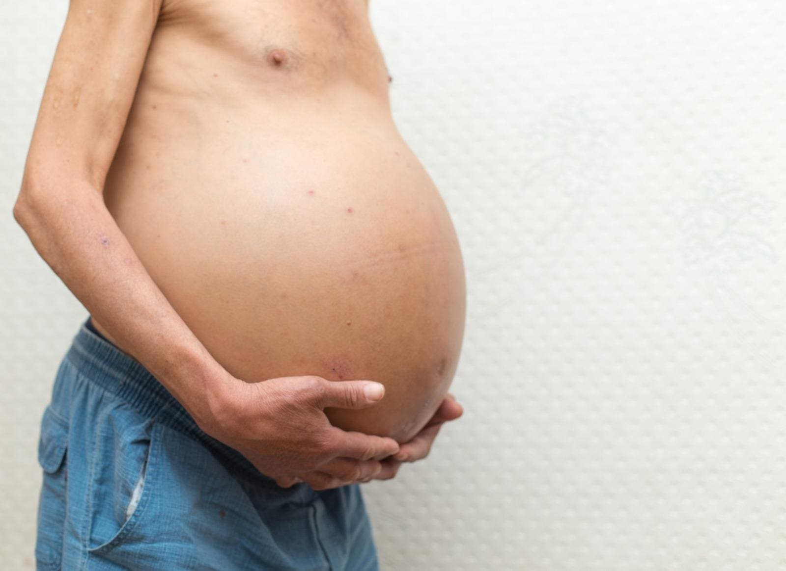
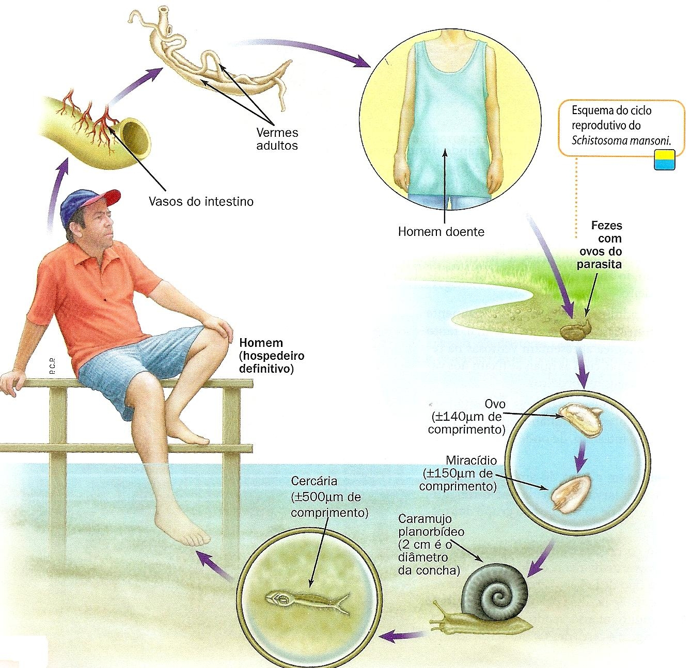
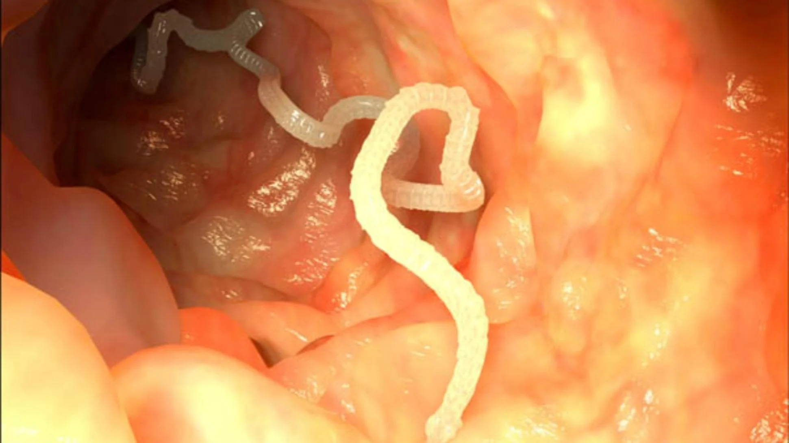
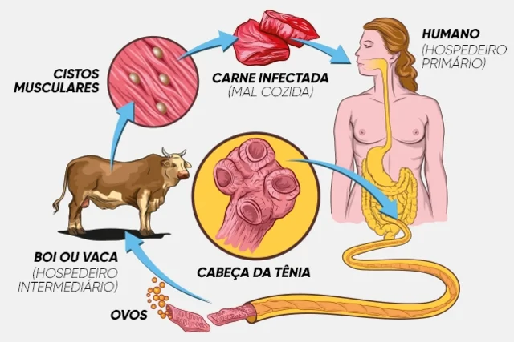
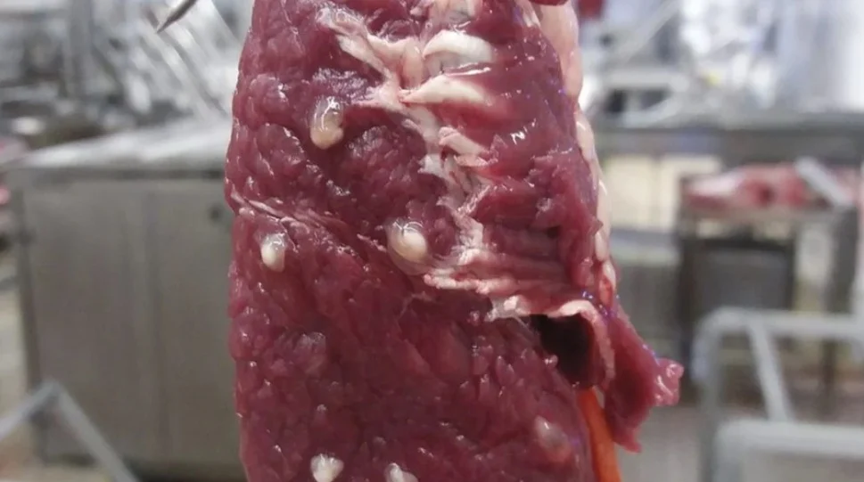
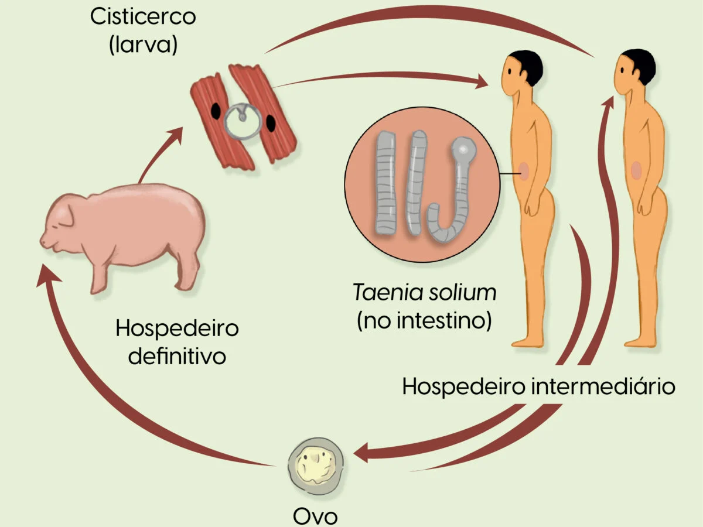
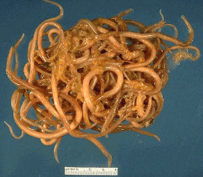
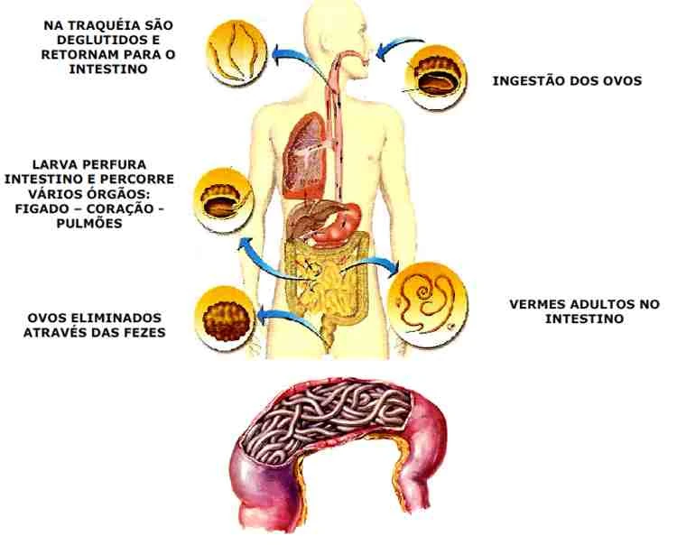
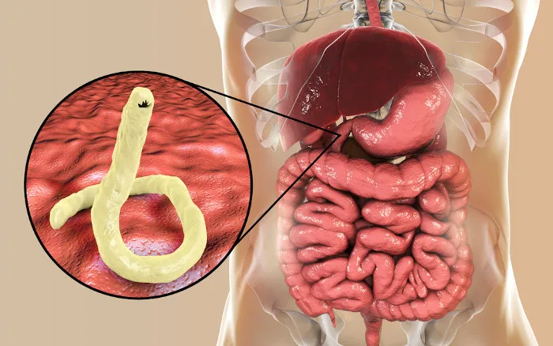

Esquistossomose
Sintomas
Febre, calafrios, tosse, dores musculares e de cabeça, entre outros.
Formas de Transmissão
Contato com água contaminada por larvas do parasita.
Agente Etiológico
Schistosoma mansoni.
Vetor
Caramujo do gênero Biomphalaria.
Profilaxia
Evitar contato com água contaminada, saneamento básico e tratamento de doentes.
Ciclo de vida do parasito
Teníase
Sintomas
Desconforto abdominal, náuseas, perda de apetite, entre outros.
Formas de Transmissão
Ingestão de carne crua ou mal cozida contaminada com larvas do parasita.
Agente Etiológico
Taenia saginata(boi) e Taenia solium (porco).
Profilaxia
Consumir carne bem cozida e cuidados com a higiene.
Ciclo de vida do parasito
Cisticercose
Diferentemente da teníase, a cisticercose ocorre quando os cisticercos são ingeridos pelo hospedeiro intermediário (humanos)
Sintomas
Convulsões, dores de cabeça, confusão, entre outros.
Formas de Transmissão
Ingestão de ovos da Taenia solium presentes em alimentos ou água contaminada.
Agente Etiológico
Larvas de Taenia solium.
Profilaxia
Higiene alimentar e saneamento básico.
Ciclo da efemeridade
Ascaridíase
Sintomas
Dor abdominal, náuseas, diarreia, entre outros.
Formas de Transmissão
Ingestão de alimentos ou água contaminada com ovos do parasita.
Agente Etiológico
Ascaris lumbricoides.
Profilaxia
Higiene alimentar, lavar as mãos e saneamento básico.
Ciclo de vida do parasito
Ancilostomose (Amarelão)
Sintomas
Anemia, fraqueza, cansaço, entre outros.
Formas de Transmissão
Penetração de larvas pela pele, geralmente ao andar descalço em solo contaminado.
Agente Etiológico
Ancylostoma duodenale e Necator americanus.
Profilaxia
Uso de calçados, higiene e saneamento básico.